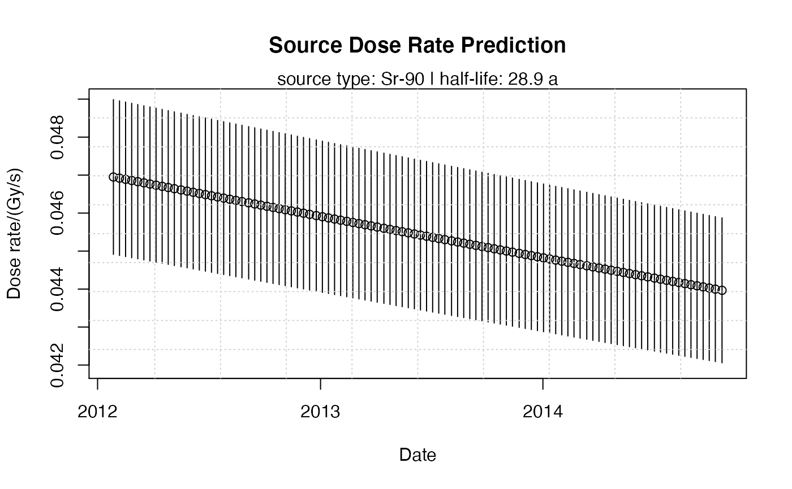

R/calc_SourceDoseRate.R
calc_SourceDoseRate.RdCalculating the dose rate of the irradiation source via the date of measurement based on: source calibration date, source dose rate, dose rate error. The function returns a data.frame that provides the input argument dose_rate for the function Second2Gray.
calc_SourceDoseRate( measurement.date = Sys.Date(), calib.date, calib.dose.rate, calib.error, source.type = "Sr-90", dose.rate.unit = "Gy/s", predict = NULL )
| measurement.date | character or Date (with default): Date of measurement in |
|---|---|
| calib.date | character or Date (required):
date of source calibration in |
| calib.dose.rate | numeric (required): dose rate at date of calibration in Gy/s or Gy/min |
| calib.error | numeric (required): error of dose rate at date of calibration Gy/s or Gy/min |
| source.type | character (with default):
specify irradiation source ( |
| dose.rate.unit | character (with default):
specify dose rate unit for input ( |
| predict | integer (with default):
option allowing to predict the dose rate of the source over time in days
set by the provided value. Starting date is the value set with
|
Returns an S4 object of type RLum.Results.
Slot data contains a list with the following structure:
$ dose.rate (data.frame) .. $ dose.rate .. $ dose.rate.error .. $ date (corresponding measurement date) $ parameters (list) .. $ source.type .. $ halflife .. $ dose.rate.unit $ call (the original function call)
The output should be accessed using the function get_RLum.
A plot method of the output is provided via plot_RLum
Calculation of the source dose rate based on the time elapsed since the last
calibration of the irradiation source. Decay parameters assume a Sr-90 beta
source. $$dose.rate = D0 * exp(-log(2) / T.1/2 * t)$$
with: D0 <-
calibration dose rate T.1/2 <- half-life of the source nuclide (here in
days) t <- time since source calibration (in days) log(2) / T.1/2 equals the
decay constant lambda
Information on the date of measurements may be taken from the data's
original .BIN file (using e.g., BINfile <- readBIN2R() and the slot
BINfile@METADATA$DATE)
Allowed source types and related values
| # | Source type | T.1/2 | Reference | [1] |
| Sr-90 | 28.90 y | NNDC, Brookhaven National Laboratory | [2] | Am-214 |
| 432.6 y | NNDC, Brookhaven National Laboratory | [3] | Co-60 | 5.274 y |
| NNDC, Brookhaven National Laboratory | [4 | Cs-137 | 30.08 y | NNDC, Brookhaven National Laboratory |
Please be careful when using the option predict, especially when a multiple set
for measurement.date and calib.date is provided. For the source dose rate prediction
the function takes the last value measurement.date and predicts from that the the source
source dose rate for the number of days requested,
means: the (multiple) original input will be replaced. However, the function
do not change entries for the calibration dates, but mix them up. Therefore,
it is not recommended to use this option when multiple calibration dates (calib.date)
are provided.
0.3.2
Fuchs, M.C., Kreutzer, S., 2021. calc_SourceDoseRate(): Calculation of the source dose rate via the date of measurement. Function version 0.3.2. In: Kreutzer, S., Burow, C., Dietze, M., Fuchs, M.C., Schmidt, C., Fischer, M., Friedrich, J., Mercier, N., Riedesel, S., Autzen, M., Mittelstrass, D., Gray, H.J., 2021. Luminescence: Comprehensive Luminescence Dating Data Analysis. R package version 0.9.11. https://CRAN.R-project.org/package=Luminescence
NNDC, Brookhaven National Laboratory http://www.nndc.bnl.gov/
Margret C. Fuchs, HZDR, Helmholtz-Institute Freiberg for Resource Technology (Germany)
Sebastian Kreutzer, Geography & Earth Sciences, Aberystwyth University (United Kingdom)
, RLum Developer Team
##(1) Simple function usage ##Basic calculation of the dose rate for a specific date dose.rate <- calc_SourceDoseRate(measurement.date = "2012-01-27", calib.date = "2014-12-19", calib.dose.rate = 0.0438, calib.error = 0.0019) ##show results get_RLum(dose.rate)#> dose.rate dose.rate.error date #> 1 0.04695031 0.002036657 2012-01-27##(2) Usage in combination with another function (e.g., Second2Gray() ) ## load example data data(ExampleData.DeValues, envir = environment()) ## use the calculated variable dose.rate as input argument ## to convert De(s) to De(Gy) Second2Gray(ExampleData.DeValues$BT998, dose.rate)#> De De.error #> 1 162.37 5.717 #> 2 163.02 5.514 #> 3 177.72 7.294 #> 4 145.94 4.939 #> 5 154.81 4.976 #> 6 132.32 4.792 #> 7 132.54 4.531 #> 8 136.21 4.712 #> 9 134.05 4.963 #> 10 133.40 4.562 #> 11 127.13 4.340 #> 12 137.29 4.725 #> 13 118.75 3.967 #> 14 129.72 4.488 #> 15 133.01 4.426 #> 16 133.67 4.334 #> 17 132.57 4.568 #> 18 135.43 4.532 #> 19 137.84 4.560 #> 20 140.91 4.768 #> 21 136.96 4.641 #> 22 140.47 5.384 #> 23 135.43 4.628 #> 24 123.79 3.729 #> 25 128.18 4.090##(3) source rate prediction and plotting dose.rate <- calc_SourceDoseRate(measurement.date = "2012-01-27", calib.date = "2014-12-19", calib.dose.rate = 0.0438, calib.error = 0.0019, predict = 1000) plot_RLum(dose.rate)